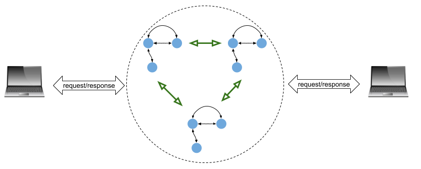
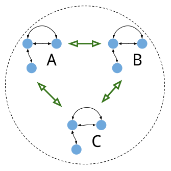

This is the first post in a multi-part series describing the Raft distributed consensus algorithm and its complete implementation in Go. Here is a complete list:
- Part 0: Introduction (this post)
- Part 1: Elections
- Part 2: Commands and log replication
- Part 3: Persistence and optimizations
- Part 4: Key/Value database
- Part 5: Exactly-once delivery
Raft is a relatively new algorithm (2014), but it's already being used quite a bit in industry. The best known example is probably Kubernetes, which relies on Raft through the etcd distributed key-value store.
The goal of this series of posts is to describe a fully functioning and rigorously tested implementation of Raft, and provide some intuition for how Raft works along the way. It is not meant as the sole resource for learning Raft. I assume you've read the Raft paper at least once; in addition it's highly recommended to spend some time perusing the resources on the Raft website - watch a talk or two by its creators, play with the visualization, skim Ongaro's PhD thesis for more details, etc.
Don't expect fully grasping Raft in a single day. Even though it was designed to be easier to understand than Paxos, Raft is still pretty complicated. The problem it's solving - distributed consensus - is a hard problem, so there's a natural lower limit on the complexity of the solution.
Replicated State Machines
Distributed consensus algorithms can be seen as solving the problem of replicating a deterministic state machine across multiple servers. The term state machine is used to represent an arbitrary service; after all, state machines are one of the foundations of computer science and everything can be represented by them. Databases, file servers, lock servers etc. can all be thought of as complex state machines.
Consider some service represented by a state machine. Multiple clients can connect to it and issue requests, expecting responses back:
This system works well as long as the server executing the state machine is reliable. If the server crashes, our service becomes unavailable, which may not be acceptable. In general, our system is only as reliable as the single server running it.
A common way to increase the reliability of a service is by means of replication. We can run several instances of the service on different servers. This creates a cluster of servers that works in unison to provide the service, and any one server crashing shouldn't bring the service down. Isolating the servers from each other [1] further increases reliability by removing common modes of failure that would affect multiple servers simultaneously.
Instead of contacting a single server to perform a service, clients will contact the whole cluster. In addition, the service replicas that make up a cluster have to communicate between themselves to properly replicate the state:
Each state machine in this diagram is a replica of the service. The idea is that all state machines execute in lockstep, taking the same inputs from client requests and performing the same state transitions. This ensures that they also return the same results to clients, even if some of the servers fail. Raft is an algorithm that implements this.
This is the right place to clarify some terminology which this series of posts will be using repeatedly:
- Service: is the logical task of the distributed system we're implementing. For example, a key-value database.
- Server or Replica: one instance of Raft-enabled service running on an isolated machine with a network connection to other replicas and to clients.
- Cluster: a set of Raft servers collaborating to implement a distributed service. Typical cluster sizes are 3 or 5.
Consensus module and Raft log
Now it's time to peek inside one of those state machines shown in the diagram above. Raft, being a generic algorithm, doesn't dictate how services are implemented in terms of state machines. All it aims to achieve is the ability to reliably and deterministically record and reproduce the sequence of inputs (also called commands in Raft parlance) to a state machine. Given an initial state and all the inputs, it's possible to replay a state machine with full fidelity. An alternative way to think about it: if we take two separate replicas of the same state machine and feed them the same sequence of inputs starting from the same initial state, the state machines will end up in the same state and will produce the same outputs along the way.
This is the structure of a generic service using Raft:

Some more details about these components:
- The state machine is the same one as we've seen above. It represents some arbitrary service; a key-value store is a common example when presenting Raft.
- The Log is where all the commands (inputs) issued by clients are stored. The commands are not applied to the state machine directly; rather, Raft applies them when they have been successfully replicated to a majority of servers. Moreover, this log is persistent - it's saved on stable storage that survives crashes, and can be used to replay the state machine after a crash.
- The Consensus Module is the heart of the Raft algorithm; it's accepting commands from clients, makes sure to save them in the log, replicate them with other Raft replicas in the cluster (the same green arrow as in the previous diagram) and commit them to the state machine when satisfied that it's safe. Committing to the state machine results in notifying clients of the actual change.
If this seems vague for now, don't worry. This is what the rest of the posts in the series are going to explain in detail!
Leaders and followers
Raft uses a strong leadership model, wherein one of the replicas in the cluster serves as a leader and others serve as followers. The leader is responsible for acting upon client requests, replicating commands to followers and returning responses to clients.
During normal operation, the goal of followers is to simply replicate the leader's log. In case of a leader failure or network partition, one follower can take over leadership, so the service remains available.
This model has its pros and cons. A significant advantage is simplicity. Data always flows from a leader to followers, and only a leader answers client requests. This makes Raft clusters easier to analyze, test and debug. A disadvantage is performance - since only a single server in the cluster talks to clients, this can become a bottleneck in case of a spike of client activity. The answer to this is typically that Raft shouldn't be used for traffic-heavy services. It's more suitable for low-traffic scenarios where consistency is critical, at the possible expense of availability - we'll get back to this point in the section on fault tolerance.
Client interaction
Earlier, I said "Instead of contacting a single server to perform a service, clients will contact the whole cluster"; but what does this mean? A cluster is just a group of servers connected over the network, so how do you contact "the whole cluster"?
The answer is simple:
- When working with a Raft cluster, a client knows the network addresses of the cluster's replicas. How it knows this (e.g. by using some sort of service discovery mechanism) it out of scope for this post.
- A client initially sends a request to an arbitrary replica. If this replica is the leader, it acknowledges the request immediately and the client will wait for a full response. After that, the client remembers that this replica is the leader and won't have to search for it again (until some failure, like leader crash).
- If the replica says it's not the leader, the client will try another replica. A possible optimization here is that a follower replica can tell the client which other replica is the leader. Since replicas communicate continuously among themselves, typically it knows the right answer. This can save the client a couple of guesses.
- Another case in which the client may realize the replica it contacted is not the leader is if it's request is not committed within some timeout. This may mean the replica it contacted is not actually the leader (even if it still thinks it is) - it may have been partitioned from the other Raft servers. When the timeout elapses, the client will go on searching for a different leader again.
The optimization mentioned in the third bullet point is not necessary in most cases. In general, it's useful to distinguish between "normal operation" and "fault scenario" in Raft. A typical service will spend over 99.9% of its time in "normal operation", where clients know who the leader is because they have this information cached from back when they first contacted the service. Fault scenarios - which we'll discuss in more detail in the next section - definitely muddle the waters, but only for a short while. As we'll learn in detail in the next posts, a Raft cluster will recover from a temporary server failure or network partition very quickly - in well under a second in most scenarios. There will be a short blip of unavailability while the new leader asserts its leadership and clients find which server it is, but afterwards it will go back to the "normal operation mode".
Fault tolerance in Raft and the CAP theorem
Let's look a back at the diagram of three Raft replicas, without connected clients this time:
What kinds of failures can we expect in this cluster?
Every component in a modern computer can fail, but to make the discussion a bit easier let's treat a server running a Raft instance as an atomic unit. This leaves us with two primary failure kinds:
- A server crash, wherein one of the servers stops responding to all network traffic for a while. A crashed server is typically restarted and may come back online after a brief break.
- A network partition, wherein one or more servers gets disconnected from other servers and/or from clients, due to a problem with the networking equipment or transmission medium.
From the point of view of server A communicating with server B, a crash in B is indistinguishable from a partition between A and B. They both manifest in the same way - A stops receiving any messages or responses from B. On a system-level view, network partitions are quite a bit more insidious, though, because they affect multiple servers at the same time. We'll be going through some tricky scenarios resulting from partitions in the next parts of the series.
To be able to handle arbitrary network partitions and server crashes gracefully, Raft requires a majority of servers in the cluster to be up and available to the leader at any given moment to make progress. With 3 servers, Raft will tolerate a single server failure. With 5 servers, it will tolerate 2; with 2N+1 servers, it will tolerate N failures.
This brings us to the CAP theorem, the practical consequence of which is that in the presence of network partitions (which are an unavoidable part of life), we have to carefully balance availability vs. consistency.
In this balance, Raft is firmly in the consistency camp. Its invariants are designed to prevent cases where the cluster may reach an inconsistent state, where different clients get different answer. For this to work, Raft sacrifices availability.
As I mentioned briefly before, Raft wasn't designed for high-throughput, fine-grained services. Every client request triggers quite a bit of work - communication between Raft replicas to replicate it to a majority, as well as persist it; all before a client gets a response.
So you wouldn't design a replicated database where all client requests go through Raft, for example. It would just be too slow. Raft is much better suited for coarse-grained distributed primitives - like implementing a lock server, electing leaders for higher-level protocols, replicating critical configuration data in a distributed system, and so on.
Why Go
The Raft implementation presented in this series is written in Go. From my point of view, Go has three strong advantages that make it a promising implementation language for this series, and for networked services in general:
- Concurrency: algorithms like Raft are profoundly concurrent in nature. Each replica performs ongoing operations, runs timers for timed events, and has to respond to asynchronous requests from other replicas and clients. I've already written why I consider Go the perfect language for such code.
- Standard library: Go has a powerful and industrial-strength standard library which makes it easy to write sophisticated network servers without importing and learning any third-party libraries. Particularly in the case of Raft, the first question one has to answer is "how to send messages between replicas?", and many folks get mired in the details of designing a protocol and some serialization, or using heavy third-party libraries. Go just has net/rpc, which is a good-enough solution for such tasks, is very quick to set up and requires no imports.
- Simplicity: implementing distributed consensus is complicated enough even before we start considering the implementation language. It's possible to write clear and simple code in any language, but in Go it's the default idiom, and the language opposes complexity on every possible level.
What's next
Thank you for reading so far! Please let me know if there's anything I could've written better. Raft may be deceptively simple on the conceptual level, but there are many gotchas once we get into the code. Future parts in the series will provide much more details on every facet of the algorithm.
Now you should be ready to move on to Part 1, where we start implementing Raft.
| [1] | For example, by keeping them in different racks and/or connected to different power supplies, or even in different buildings. The really critical services by large companies are typically replicated at planetary scale, with replicas in different geographic regions. |